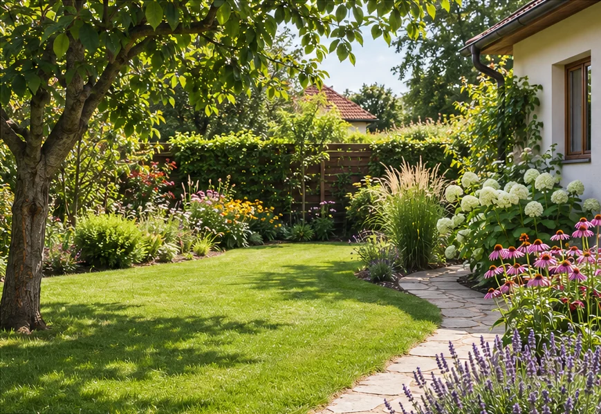

Realizace zahrad
Kompletní realizace zahrad i firemních prostor.
- Nové zahrady a předzahrádky
- Obnova a revitalizace zahrad
- Zakládání trávníků
- Výsadby stromů a keřů
Zahradnické práce na zakázku
Realizace a údržba zahrad, rizikové kácení a péče o zeleň.
Chrudim · Pardubice · Vysoké Mýto
U větších zakázek dojezd podle domluvy.

Kompletní realizace zahrad i firemních prostor.
Pravidelná i jednorázová péče o zahradu.
Odborný přístup ke stromům i okrasným dřevinám.
Bezpečné kácení stromů i ve stísněných podmínkách.
Kompletní práce kolem domu a zahrady.
Od poptávky k práci
Zavolejte, kde zahrada je a co potřebujete udělat. Pro první představu pomůže přibližná plocha nebo fotografie.
Pro nacenění upřednostňuji osobní setkání na místě. Domluvíme rozsah práce, cenu a termín.
V domluveném termínu přijedu. Podle potřeby si můžeme domluvit i pravidelnou údržbu.
Poptávka
Zavolejte mi a domluvíme se na práci i osobní prohlídce zahrady. Připravím vám nezávaznou kalkulaci zdarma.
Ve formuláři si můžete připravit text poptávky a zkopírovat ho do zprávy.